The Road to Viñales - A Tale of Cycling in Cuba - Part 1

Author’s Note: This story was written on a blog that I began along with my travels a few years ago. The trip greatly fueled my desire to travel which eventually led to living as an expat. For both sentimental and archival purposes, I decided to include this story as the first set of posts on my new site. I hope you enjoy it. 🙂
As I lay on the side of the road, the afternoon sun bearing down on me and threatening to steal away my consciousness, I could hear the throaty rumble of a motor headed my way. I barely registered the rusty blue taxi that passed little more than arm’s length in front of me, leaving a cloud of lead-laden exhaust in its wake. Exhaustion spread through me like a virus, and I sat still in the silence.
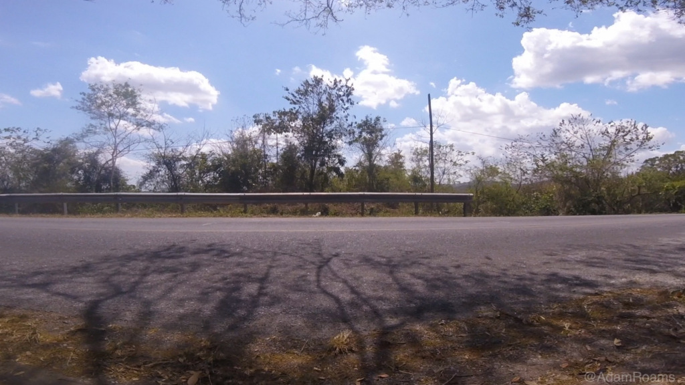I hadn’t seen this mountain coming, and it had made things difficult. I might have said that climbing it on a bicycle had been tough, but how could I know? I had given up and started pushing the bike at least an hour ago. After riding it through the countryside for 2 days, I just didn’t have the energy to pedal up the side of a mountain.
I took a deep breath in the silence. My body ached, and my mind was numb from the heat. All trivial thoughts had been discarded in favor of surviving this ordeal, but now there was doubt forming in my mind. Lying in the dirt, too weak to fight back against the most dangerous of questions, I couldn’t help but ask myself -
Am I strong enough to finish this?
How It All Began
Click. Tickets purchased. I was going to Cuba for 2 weeks!
Flight secured, I now had the \important task of figuring out what I was going to do when I got there. I didn’t want to be the stereotypical Havana tourist, voluntarily sequestering myself at a beach resort or spending my time searching for exclusive nightclubs where I could drink and party all night. That’s just not how I travel. Instead, I wanted to interact personally with the locals and to discover what makes Cuba and its people special.
I also wanted to step outside Havana to see a side of the country I might not normally encounter, and to that end I decided to go on a cross country bike ride. I would begin in Havana and ride my bicycle 130 miles (209 km) west to a place called Valle de Viñales (Valley of Vines), home of the best rock climbing in Cuba. I hoped that in 2 days of riding through the countryside I could gain a more rounded perspective on Cuba, and when I finished my ride I could partake in my favorite outdoor sport. It sounded awesome.
But there was a problem - I didn’t know if I could actually do it. I had never ridden that far on a bike before, and I would be totally alone in unfamiliar territory. I knew I could ride for a little while in the flats of Illinois, but 130 miles across Cuba? And then back? I wasn’t sure.
I pulled up a map of Cuba for guidance. Judging by the few roads I could see, it looked like there was a highway along the north coast of the island that made its way to Viñales with little elevation change. That was good news. Still, that was all the information I could find, and it made me nervous. There was no way for me to know what the road was actually like. But again and again, I followed the path from Havana to Viñales, and each time my eyes made the journey my heart skipped with excitement. I had to go on this ride.
Over the next few weeks I bought all the gear I thought I would need, made arrangements to ship my bike with Spirit, and packed it into a big box for the flight to Cuba. I waited restlessly for the day of my departure, and I shared my excitement for my ride with everyone who would listen.
‘You’re crazy!’ my friends said. So I knew it was a great idea.
First Days in Havana
The plan was to spend 3 days in Havana and begin my long ride out to Viñales on the 4th morning of my trip. During the day I wandered around well-known parts of the city like Habana Vieja (Old Havana), the Malecón, and Vedado. It was a lot of fun to explore those areas, and I had a great time conversing with locals everywhere I went. Fishermen, fruit vendors, musicians - I even talked with someone who I didn’t realize was a jinetera (prostitute), but she got annoyed with my rambling and asked if I was going to make her an offer for the night. Realizing my mistake, I apologized and bought her some cigarettes for wasting her time. I got better at spotting prostitutes after that.
When evening came I made friends with the other travelers in the hostel. We swapped our travel stories over dinner every night, and it was really cool to meet people from so many different parts of the world and hear about the journeys they were on. Cuba was the last stop for some, but others would continue on to places like Mexico, Panama, or the USA. With excitement, I would tell them about my grand plan to ride west and climb in the mountains of Viñales. Like my friends back home, they thought I was crazy to go on such a ride, but I could tell they were also excited for my adventure just like I was.
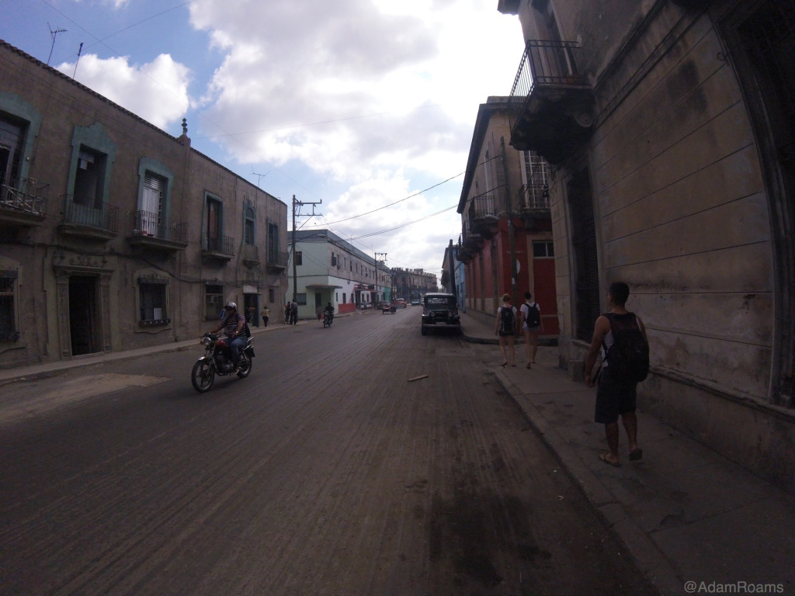 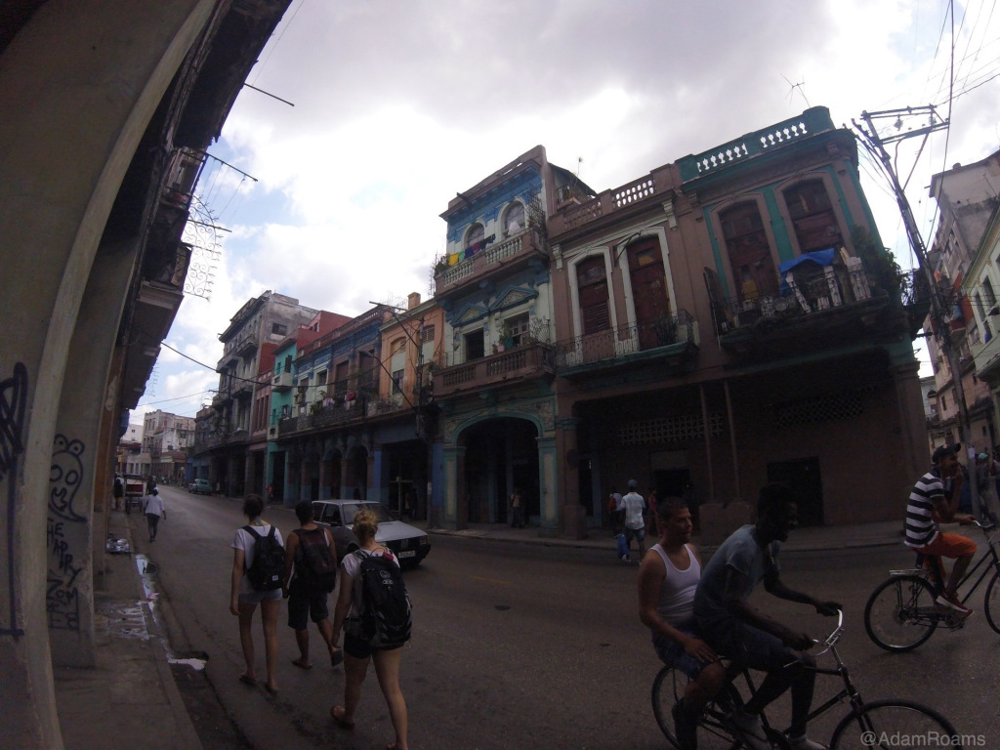 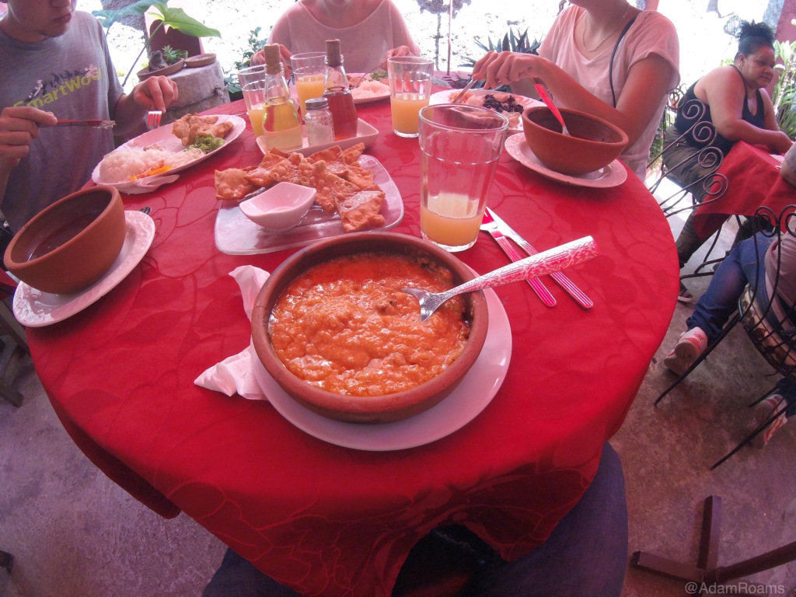Alas, my bike ride didn’t start quite as intended. I got extremely sick the night before I had planned to leave, and I spent many hours vomiting in the hostel bathroom. I painfully ejected all my food from the previous days, and even though I drank juice and water to keep my fluids up it seemed that I was only adding more material to be discharged minutes later. I was never able to pinpoint the cause of my illness - likely food or water - and it was a dangerous situation to be in.
After 2 days of rest I still hadn’t fully recovered, but I couldn’t afford to lose any more time. No matter how I felt, I intended to make my way out of Havana in the morning.
The next day I woke to the noises of the stirring city pouring in through an open window, and I rolled over to greet them with a groan. The muscles around my core were still tender, and the stifling heat of the room raised my lingering nausea to an uncomfortable level. With difficulty, I forced myself out of bed and stumbled to the balcony in search of fresh air.
Outside, the pink light of the early morning sun shone softly against the dim silhouette of Central Havana, and a light, cool breeze danced its way through the waking city. I breathed deeply as the healing wind brushed across my cheeks and scattered away toward the horizon.
No matter what, I had said. It was time to ride.
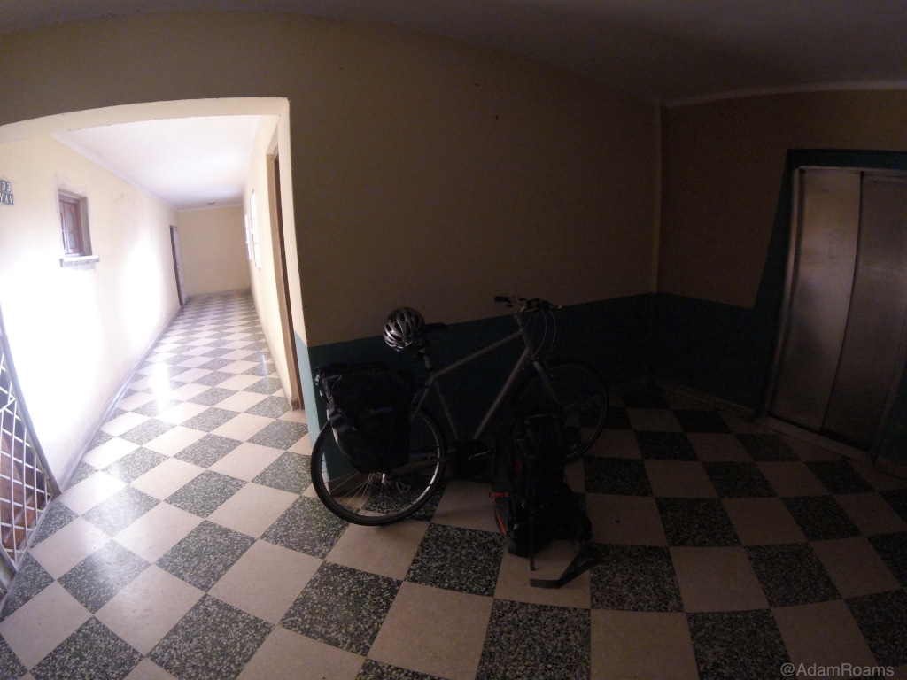Day 1 - Finding the Road to Viñales
Finding my way out of Havana was the first hurdle on my ride to Viñales. I had found a fantastic phone app called Maps.Me that provided me with a map of Cuba’s roads everywhere I went. Being an entirely offline map, I was frequently concerned that I would be navigating with inaccurate location information, but somehow it managed to know exactly where I was at all times and provided detailed directions every step of the way. It was pretty incredible, and I ended up putting a lot of trust in the service. Perhaps a little too much.
I put in my destination and told Maps.Me to give me a bike route out of the city. It took about 2 hours to get to the edge of Havana, and the winding route south took me through areas that few tourists are likely to ever see. Stark visions of abject poverty were even clearer here than in the inner neighborhoods where tourist perception remains an outward concern. Ramshackle homes lined every street, their walls crumbling to reveal the truths of life in Havana for all those willing to see.
Peering through windows and holes left by the decay, I spied people going about their daily lives - watching television, having a late breakfast, and even sweeping kitchen floors in an endless effort to keep out the dust of the outside world. But not all homes were so exposed, and while it seemed that many of them suffered from structural failure and even the black char of fires long past, others appeared adorned with fresh coats of paint and cheery doormats welcoming guests of all origins.
It was difficult to understand how each city block could display so many conflicting signs of life and death, yet the dissonance created by the sight of these homes and the contrasting attitudes of the people living in them was a source of intense beauty. Life was certainly not perfect here, not even easy, but the universal smiles with which these people approached each dawn and the will to make things better pushed them forward and brought them hope with every new day.
Leaving the last of these neighborhoods, I continued to follow my map to the edge of the city. Pedaling into an alley walled by seemingly abandoned warehouses, I came across a bridge unlike anything I had seen yet in Cuba. It was narrow, made of solid concrete with wooden fencing on either side for protection. On the left of this bridge was an untamed patch of grass, weeds, and vines. On its right was a large pile of garbage, a landfill of trash bags spilling their vile guts and threatening to flood the bridge if the mound rose any higher. At the end of the bridge was an entrance into the wilds on the edge of Havana. It was a mythical gate into the unknown lands beyond the city, a passage with a character that you could only find in a place like Cuba.
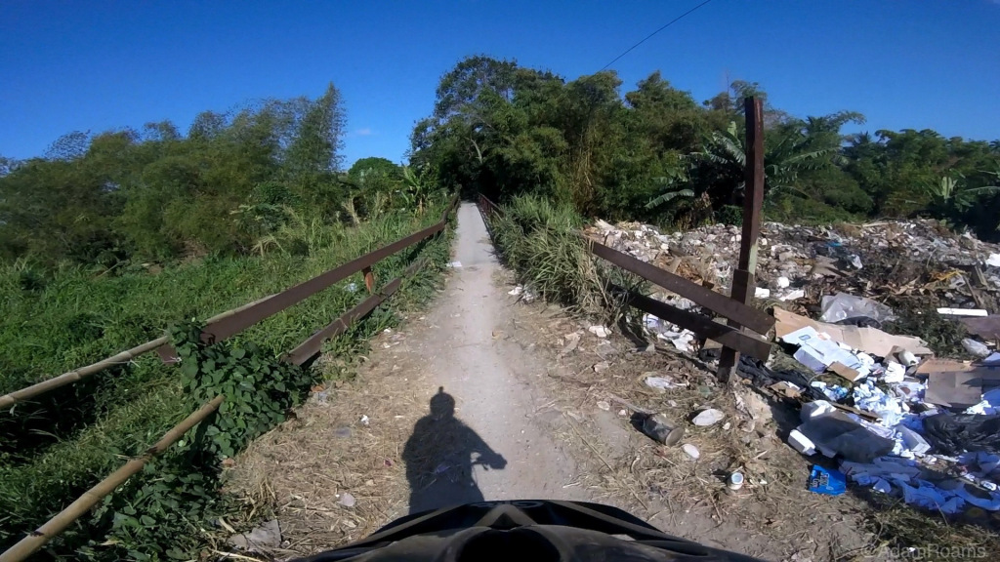I crossed the bridge cautiously and entered the dark path, but the woods lasted only a moment. Almost immediately I was out of the trees and in the countryside, and the city of Havana had ended with such an abruptness that I felt like I had passed into another world entirely. Open pastures and farmland lined what was now a hard dirt road, and condors circled above searching for meals in the hot sun, getting hotter by the minute. I didn’t know it at the time, but my riding environment would be essentially the same for the next 110 miles or so.
Nearer to Havana were many small, dense satellite towns rife with people in the streets, but as I rode further away those became less common. Most of the path was banked by empty farmland and long views to the horizon, covered by sun and the occasional white cloud. Every so often I would encounter a horse cart carrying a few locals who stared at me as I passed, but most of the time I was on my own.
 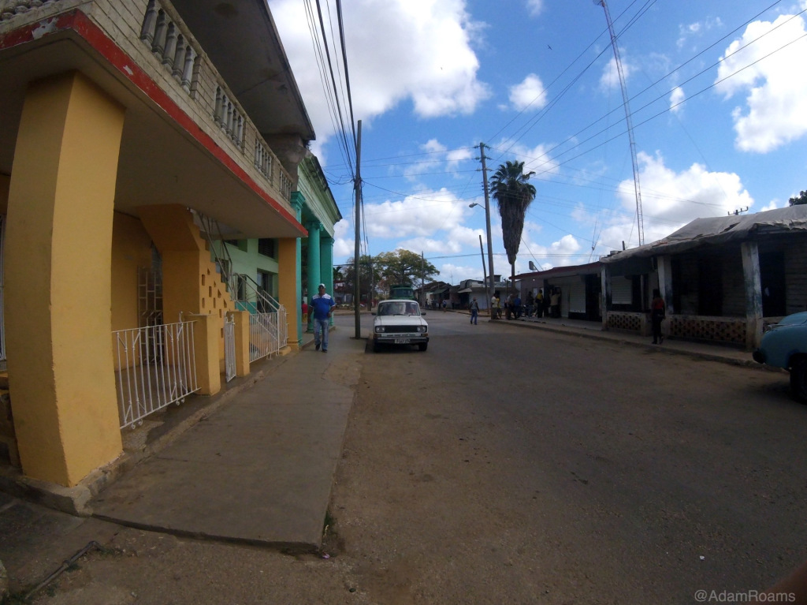
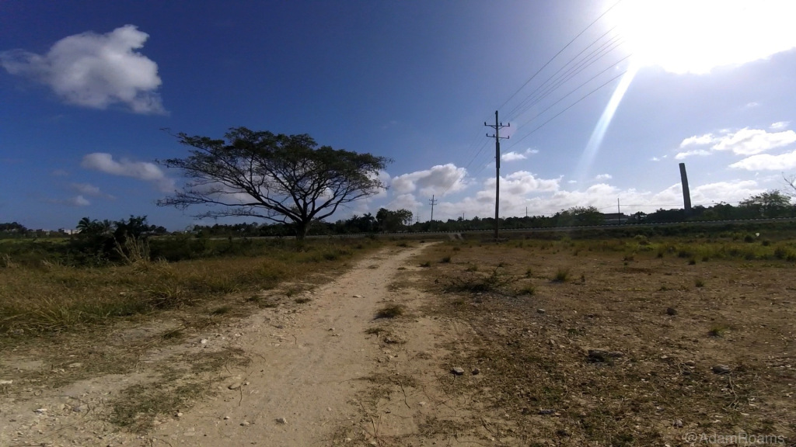
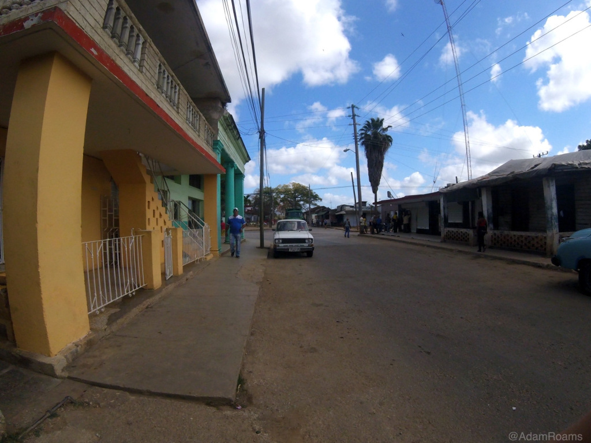
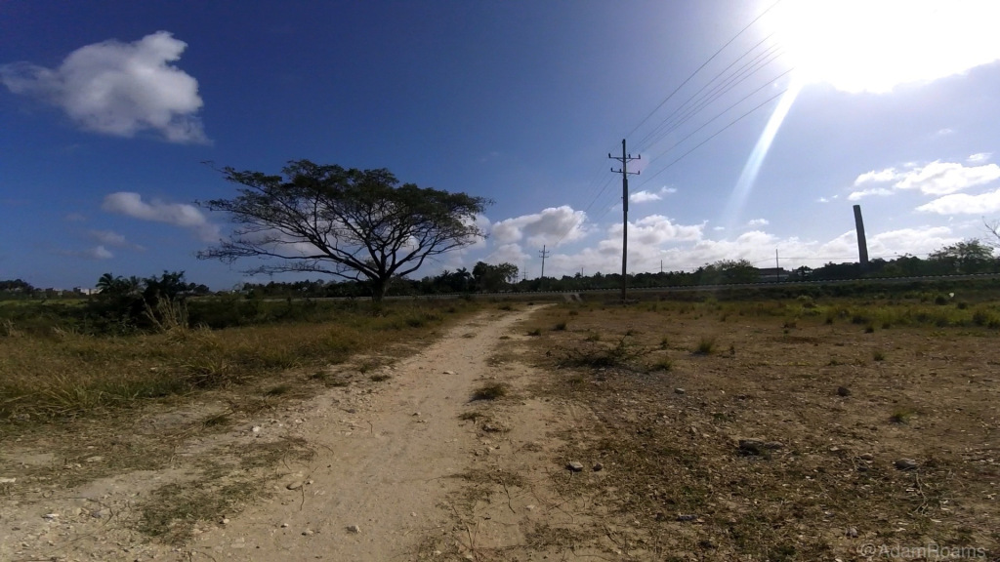
The Deception of Maps.Me
The morning had been difficult. I still hadn’t quite shaken the feeling of nausea from being sick the last few days, and I probably hadn’t eaten enough to properly prepare for the ride ahead. Together these problems loomed over me throughout the morning, and my irritation showed itself around midday when I lost a bag at a rough railroad crossing. I trudged over to where it had fallen and decided it was time for a break.
Thankfully, lunch was all that was necessary to get me back on my feet with a smile, but worry began to creep in again as I continued riding across the Cuban countryside. My map was doing an amazing job of keeping track of where I was, but as I moved further West I noticed that the bike trail it had given me was not quite what I’d thought it was. Upon closer inspection, I saw that it wanted to take me straight through the spine of a mountain range that spanned East-West through the center of the island.
Riding through a mountain range with an 1800 ft (548 m) change in elevation (twice!) was absolutely not the ride I wanted to be on. I had willingly discarded my original plan of riding along the northern coast in favor of following a map that had more certainty about it, but somehow I had completely missed how difficult this route was going to be. I was in trouble, and I didn’t see an immediate solution to my problem.
Devastated by this new information, I stopped for a break in a little town called Chacón to ask myself if a mountain ride was what I wanted to do. And that was where my luck began to improve. I was resting under the canopy of a small roadside drink shop when I caught sight of two thin silhouettes approaching from a distance. Cuban riders decked out in team cycling outfits and riding the fanciest bikes I had seen in the country rode up like they owned the place and ordered a few glasses of jugos naturales. They waved me over as a fellow cyclist, ordered me some juice, and asked where I was headed.
When I told them in broken Spanish that I was on the way to Viñales, they said I was crazy! This was the new normal, I thought. But they also said that I was basically killing myself riding these dirt backroads - there was a much better path waiting for me just down the road. All I had to do was turn onto the autopista (the highway) up ahead and it would take me nearly all the way to Viñales - no turns, no crappy roads, no misleading maps.
At first, I was a little confused. Wasn’t it illegal to ride on the autopista? It seemed that rule only applied in and around Havana, but that was a detail that I had been missing. Maps.Me didn’t understand that I could have ridden on the autopista the whole way, so since I asked for a bike path it created a route for me entirely without the highway in mind. The Cuban cyclists insisted that I take the autopista the rest of the way and wished me luck on the rest of my journey. I spent the next half hour or so beneath the highway in a drainage tunnel and had some food before getting underway again.
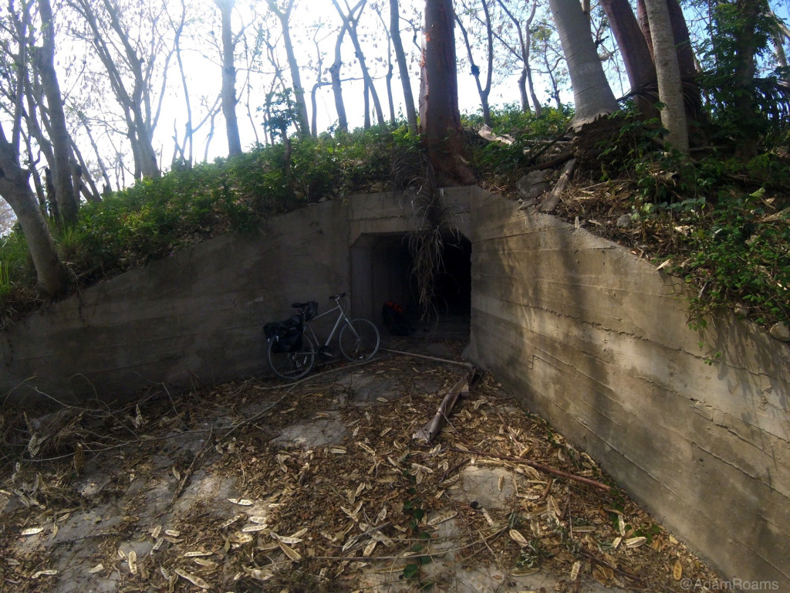The autopista was such a gift! All of a sudden I had moved from dirt roads to the smooth, paved beauty of a highway, and what a difference that change made. Any worries I’d had about riding on the autopista were quickly gone as I began to understand how it had been laid out. There were two auto lanes in each direction of travel, separated in the middle by grassy strips, and outside these lanes was an extra stretch of pavement meant purely for non-auto use. The outer shoulders may have been lower quality pavement at times, but it was the perfect place for horse carts, pedestrians, and - of course - bicycles!
My pace quickly increased on this new path, and I suddenly had fresh energy as though I’d begun my journey only moments before. I was excited about the speed and simplicity that the autopista offered, and I was happy that my ride across Cuba’s countryside was steadily improving. Though my route had changed many times already, I was still on my way to Viñales. And I was having a great time.
Continued in Part 2!